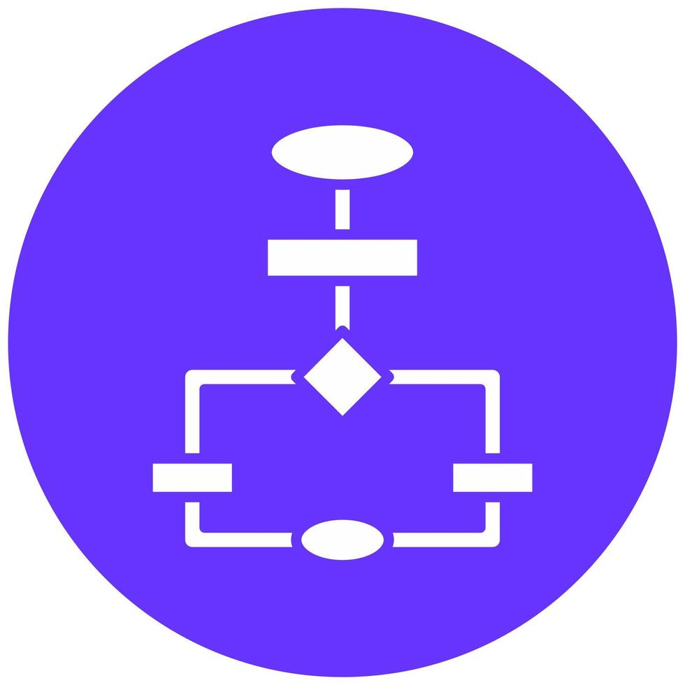
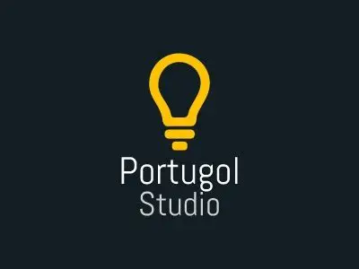
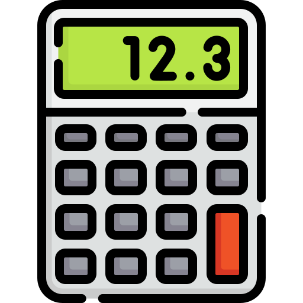

Logica Da
Área: Programação
Disciplina: Lógica de Programação
Ferramentas: Portugol e Scratch
Objetivo: Aprender a resolver problemas com lógica
Lógica de Programação
A disciplina de Lógica de Programação apresenta os principais conceitos utilizados para criar programas e resolver problemas por meio de instruções organizadas. Durante as aulas, os conteúdos foram desenvolvidos de forma teórica e prática, utilizando ferramentas como Portugol e Scratch.
Resumão de Lógica de Programação
Principais conteúdos estudados durante as aulas, explicados de forma simples.
Conceitos básicos
O que é Lógica de Programação?
A lógica de programação é a maneira de organizar ideias, regras e passos para resolver um problema e transformar essa solução em um programa.
O que faz um programador?
O programador analisa problemas, cria soluções, escreve códigos, testa o programa e corrige erros para que o sistema funcione corretamente.
Algoritmo
É uma sequência de passos organizados para realizar uma tarefa ou resolver um problema. Um algoritmo precisa ter uma ordem lógica e ser claro.
Fluxograma
É a representação visual de um algoritmo. Utiliza símbolos e setas para mostrar as etapas e o caminho que o programa deve seguir.
Pseudocódigo
É uma forma de escrever a solução de um problema de maneira parecida com um programa, mas usando uma linguagem simples, antes do código definitivo.
Portugol e comandos
Portugol
É uma forma de praticar programação usando comandos próximos da língua portuguesa. Foi utilizado para aprender e testar os conceitos de lógica.
Entrada e saída
Entrada é quando o programa recebe uma informação do usuário. Saída é quando o programa mostra uma informação ou resultado.
Variáveis e tipos de variável
Variável é um espaço usado para guardar uma informação que pode mudar durante o programa. Os tipos mais comuns são inteiro, real, caractere/texto e lógico (verdadeiro ou falso).
Operadores
Aritméticos: +, -, *, / e %. Relacionais: =, ≠, >, <, ≥ e ≤. Lógicos: E, OU e NÃO. Eles permitem calcular, comparar e combinar condições.
Estrutura de decisão
Permite que o programa escolha um caminho de acordo com uma condição. Exemplo: se a condição for verdadeira, faça uma ação; senão, faça outra.
Scratch
É uma plataforma de programação por blocos. Foi usada para criar projetos interativos e jogos, praticando comandos, movimentos, condições, eventos e regras.
Aplicações Práticas
Os conteúdos foram colocados em prática com exercícios de lógica, Portugol e projetos feitos no Scratch.

Algoritmos
Organização dos passos necessários para resolver um problema.

Fluxogramas
Representação visual das etapas de uma solução.

Pseudocódigo
Planejamento da lógica antes de escrever o programa.

Portugol
Prática de comandos, variáveis, operadores e decisões.

Variáveis e Operadores
Armazenamento, cálculos, comparações e condições.

Scratch
Criação de jogos e projetos interativos usando blocos.
Galeria de Trabalhos
Exercícios de Portugol, projetos no Scratch e fluxogramas desenvolvidos durante a disciplina.
- Todos
- Portugol
- Scratch
- Fluxogramas
{kind=link}
{kind=link}
{kind=link}
Principais Perguntas
Algumas dúvidas comuns sobre programação e sobre a profissão de programador.
Quanto um programador ganha?
O salário varia bastante conforme a experiência, a área, a cidade, a empresa e as tecnologias utilizadas. Quem está começando normalmente ganha menos, enquanto profissionais experientes e especializados podem alcançar salários bem maiores.
O que um programador faz?
Um programador cria e mantém sistemas, sites, aplicativos e jogos. Ele transforma problemas e ideias em soluções usando código e lógica de programação.
Precisa fazer faculdade?
Não é obrigatório para começar. Cursos, projetos próprios e prática também ajudam muito. Uma faculdade pode contribuir com uma formação mais completa e abrir outras oportunidades.
Quanto tempo leva para aprender?
Depende da dedicação e do objetivo. Com prática constante, é possível aprender os fundamentos em alguns meses e continuar evoluindo durante toda a carreira.
Qual linguagem devo aprender primeiro?
Para começar, linguagens e ferramentas como Portugol, Scratch, Python ou JavaScript podem ajudar. O mais importante no início é aprender lógica, variáveis, condições, repetições e funções.
Dá para trabalhar de casa?
Sim. Muitas empresas oferecem trabalho remoto ou híbrido para profissionais de tecnologia. Isso depende da empresa, da função e do nível de experiência.